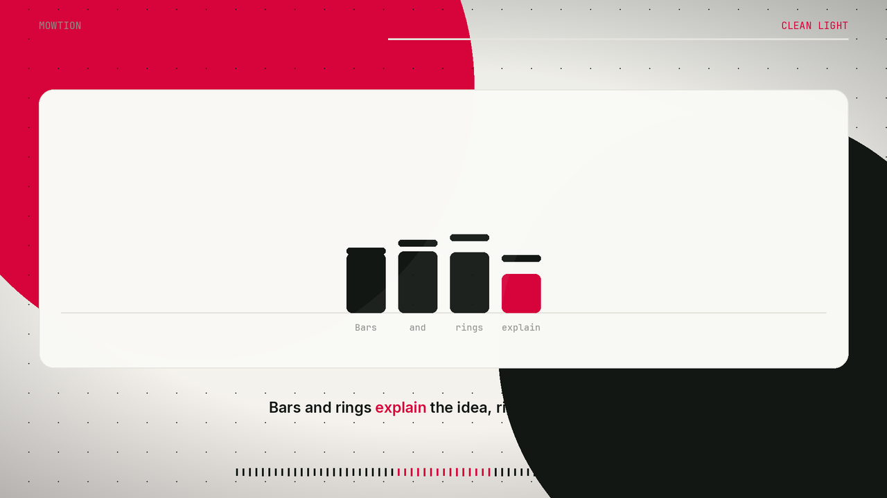

Free and open source
A finished video from a voice, or from a script.
mowtion writes the pictures, the music, and the cut. It runs on your computer. Nothing is uploaded.
Installers are attached to each GitHub release. You can also run it from source.

What it does
- Drop a clip or type a script. Voice notes, podcasts, or words you just wrote.
- Word-level transcription. faster-whisper, in float32, after the audio is converted to 16 kHz.
- A free built-in voice. Kokoro reads a script when you do not have a recording.
- Motion graphics, drawn in code. Cards, bars, rings, line charts, kinetic type. Five looks, including Dark Techy and Clean Light.
- Original music. A synth score mixed under the voice and mastered to broadcast loudness.
- Vertical or widescreen. 9:16 or 16:9, H.264 and AAC, ready to post. Optional title, description, tags, and cover.
Three steps
- Download mowtion, or install it from source.
- Type what you want to say, or drop a recording.
- Pick a style and a shape. Press Make video.